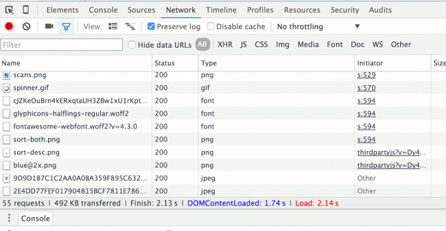
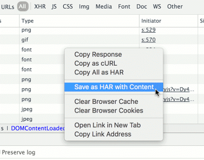

Troubleshoot interactions with SureDrop
When using or integrating with SureDrop, it may be necessary to work with Senetas engineers to diagnose problems. Following the steps below will help both you and Senetas diagnose problems more quickly.
Before reporting issues
Before reporting any issues to Senetas, ensure that you have done the following:
Check the Known Issues to see if what you’re encountering is already known. When possible, workarounds will be provided in the issues notes.
For on-prem installations, please refer to the Diagnostics instructions.
Fiddler Traces
The most useful tool when troubleshooting SureDrop issues is Fiddler. When you run Fiddler while reproducing an issue, it will record all HTTP requests and responses. You can then save the Fiddler trace and share it with Senetas engineers. Fiddler traces are an invaluable tool when troubleshooting problems because they provide a full record of the HTTP traffic between the browser and SureDrop.
Enabling HTTPS decryption in Fiddler
Because SureDrop traffic is encrypted, Fiddler must be configured to decrypt the HTTPS traffic in order to be useful. In order to enable HTTPS encryption in Fiddler, do the following:
From Fiddler, click to open the options dialog.
On the HTTPS tab, check the Capture HTTPS CONNECTs check box.
Check the Decrypt HTTPS traffic check box. When you do this Fiddler will display a dialog asking if you wish to trust the Fiddler Root certificate. Click Yes. You may also see some security warnings from the operating system asking if you want to install the certificate. Click Yes to all of these prompts.
In the drop-down, select …from browsers only.
Click OK in the options dialog.
Close Fiddler and restart it.
Fiddler is now configured to decrypt HTTPS traffic.
Fiddler must be configured to decrypt HTTPS traffic in order to produce useful traces
Using Fiddler to trace a session
Using Fiddler to trace HTTP activity is straightforward:
Open Fiddler.
If needed, begin capturing traffic (). Note that Fiddler starts in capture mode when it is opened, so this step may not be necessary.
Navigate to the host page URL while Fiddler is running, then reproduce the issue if needed.
Once the issue is reproduced, save the Fiddler session as an archive (). The resulting file should have the file extension
.saz.
Using Fiddler in Linux or OS X
Fiddler works very well in Windows, but can also be used in Linux and OS X using Mono. See http://fiddler.wikidot.com/mono for more information on installing and configuring it.
Alternatives to Fiddler: HTTP Archives (HAR)
If you cannot use Fiddler to get session traces, you can also use the Chrome browser developer tools to save HTTP Archive (HAR) files containing the HTTP requests made by the browser. To do this, do the following:
Open the Chrome developer tools and select the Network tab.
Check the Preserve log check box if you wish to retain the request log across multiple page navigations. This makes the network tracing behave more like Fiddler, and makes it less likely that you’ll lose your request log by accidentally refreshing the page or navigating away before you save the log.
Network tab in the Chrome developer tools
After you are done reproducing the issue, right-click in the network view and select the Save as HAR with Content option.
Save as HAR with Content option in the Chrome developer tools
Zip the resulting HAR file, since they can be quite large and generally compress well.
Tip
Other browsers’ developer tools have similar capabilities to Chrome to save session HTTP requests as an HTTP Archive.